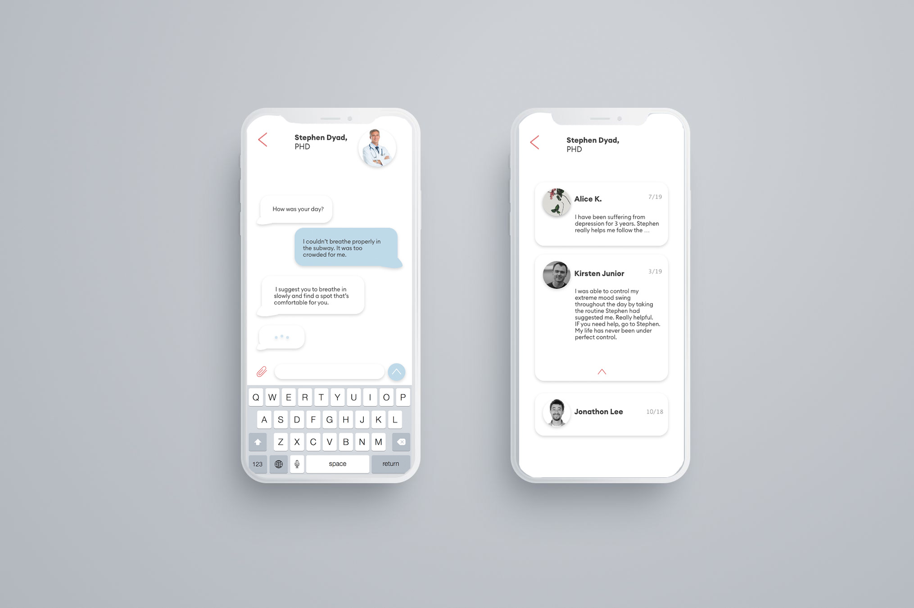
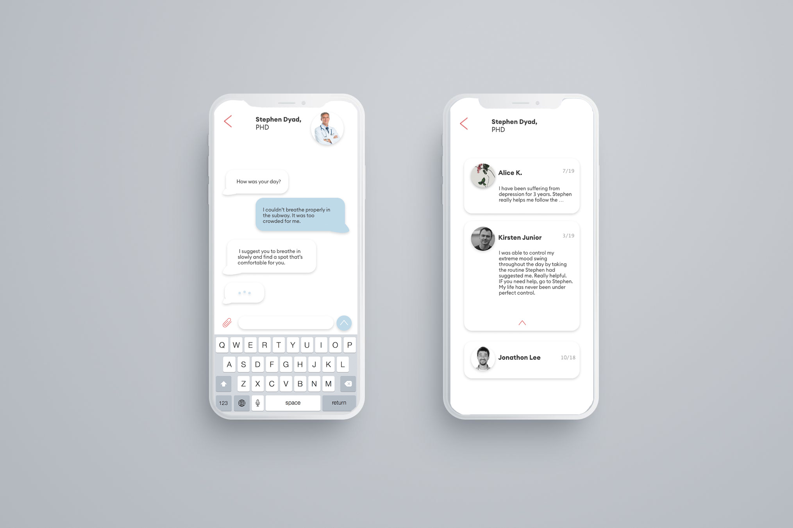

CHECKUP
2018
Most of the patients with mental disorder do not recognize the fact that they are suffering such illness. As people are more aloof to others, patients tend to lose the "golden time" to cure disorders. With the personal checkup app that enables the patients to communicate with doctors, therapists, and other patients directly, it helps the process more convenient. Especially for those who suffer social interaction with the outside world, they can easily set up appointments and service through this app.

PROBLEM
Nowadays living in a busy society, a lot of people and entertainers experience mental disorders more easily and frequently. Most of them do not receive adequate treatment, and they miss the Golden Time and fall into chronic mental illness. The lack of information and inconvenience of seeking help cause the patients to hide their feelings and emotions.

GOAL
The app aims to ease the understanding of the disease and make the treatment process easier to help patients. For those who are either hestitant to share or unaware of their situation, this app will be help them keep personal information. With social interaction, Checkup encourages to go through the struggle with others.
SERVICE
Through several self-tests and various reviews, we will try to find the treatment that works best for you. The one-on-one chat service enables real-time equivalents with dedicated doctors and emergency situations, and creates an environment that encourages energy through communication with patients in the immediate area. The entertainment element enables to share freely the recommended playlists and books.

* exhibited at 2018 Korean Design Exhibtion
Most of the patients with mental disorder do not recognize the fact that they are suffering such illness. As people are more aloof to others, patients tend to lose the "golden time" to cure disorders. With the personal checkup app that enables the patients to communicate with doctors, therapists, and other patients directly, it helps the process more convenient. Especially for those who suffer social interaction with the outside world, they can easily set up appointments and service through this app.
PROBLEM
Nowadays living in a busy society, a lot of people and entertainers experience mental disorders more easily and frequently. Most of them do not receive adequate treatment, and they miss the Golden Time and fall into chronic mental illness. The lack of information and inconvenience of seeking help cause the patients to hide their feelings and emotions.
GOAL
The app aims to ease the understanding of the disease and make the treatment process easier to help patients. For those who are either hestitant to share or unaware of their situation, this app will be help them keep personal information. With social interaction, Checkup encourages to go through the struggle with others.
SERVICE
Through several self-tests and various reviews, we will try to find the treatment that works best for you. The one-on-one chat service enables real-time equivalents with dedicated doctors and emergency situations, and creates an environment that encourages energy through communication with patients in the immediate area. The entertainment element enables to share freely the recommended playlists and books.